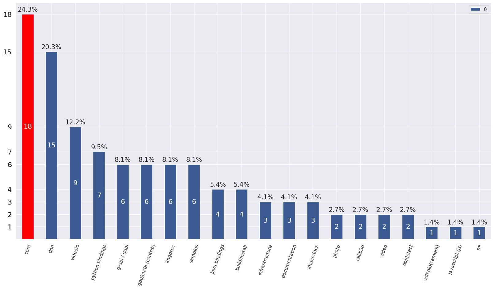

Categories distribution¶
Overview¶
Total percentage may exceed 100%, because several categories may be assigned to 1 pull request. 
Pull requests with auto assigned categories¶
Categories are assigned based on path of the changed files.
- PR#16230: cuda4dnn: improve host-device transfer performance
Assigned categories: (‘dnn’,)
- PR#16229: Android remove Eclipse relicts
Assigned categories: (‘samples’, ‘java bindings’)
- PR#16226: cuda4dnn(permute): improve reduction logic and add transpose kernel
Assigned categories: (‘dnn’,)
- PR#16225: dnn: small fix in pose estimation model
Assigned categories: (‘dnn’,)
- PR#16222: Android move version info to Gradle style
Assigned categories: (‘infrastructure’, ‘java bindings’)
- PR#16160: optimize cvCeil and cvFloor in fase_math.hpp
Assigned categories: (‘core’,)
- PR#16008: Python module: replace config.py files by config.ini
Assigned categories: (‘python bindings’,)
- PR#15929: Update seamless_cloning.cpp
Assigned categories: (‘photo’,)
- PR#15682: added cv::magnitude(InputArray xy…)
Assigned categories: (‘core’,)
- PR#15599: Adding some MSA specific optimizations for imgproc/video/vidoeio/dnn …
Assigned categories: (‘video’, ‘imgproc’, ‘core’, ‘videoio’, ‘dnn’)
- PR#15464: Fix issue #6450
Assigned categories: (‘videoio’,)
- PR#15240: Samples and tutorials for the Dnn High Level API
Assigned categories: (‘documentation’, ‘samples’)
- PR#14971: multi-images + meta-properties
Assigned categories: (‘python bindings’, ‘infrastructure’, ‘core’, ‘imgcodecs’, ‘java bindings’)
- PR#14135: Heterogeneous plugin of Intel’s Inference Engine
Assigned categories: (‘dnn’,)
- PR#13930: added CV_MAT_DEPTH_IS_FLOAT() and CV_MAT_DEPTH_IS_SIGNED()
Assigned categories: (‘core’,)
- PR#13879: add REDUCE_SUM2
Assigned categories: (‘ml’, ‘core’)
- PR#13368: Support of Unicode file paths under Windows
Assigned categories: (‘core’, ‘python bindings’, ‘imgcodecs’)
- PR#12588: Add .clang-format to help to enforce code format
Assigned categories: (‘infrastructure’,)
- PR#10318: For various PR tests
Assigned categories: (‘java bindings’,)
- PR#10131: JUST TEST
Assigned categories: (‘core’, ‘imgproc’)
- PR#6722: OpenCV addons
Assigned categories: (‘video’, ‘core’, ‘build/install’, ‘python bindings’)